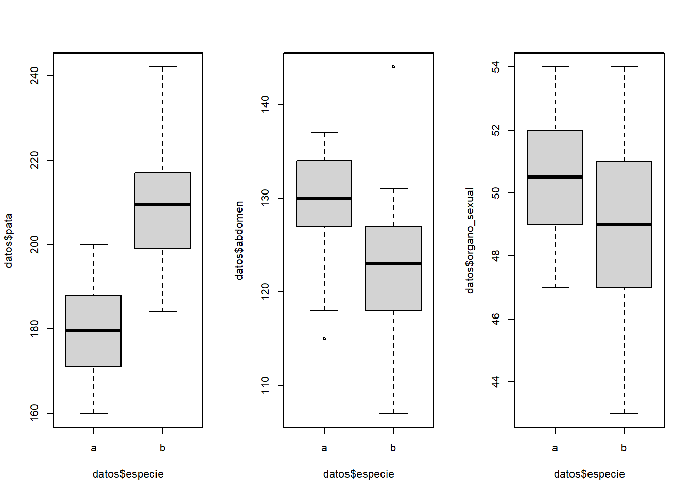
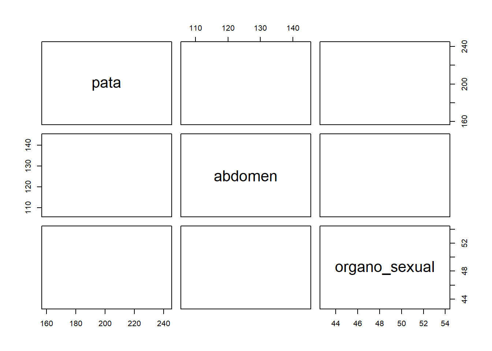

El Análisis Discriminante Lineal es un método de clasificación supervisado de variables cualitativas en el que dos o más grupos son conocidos a priori y nuevas observaciones se clasifican en uno de ellos en función de sus características. Es una alternativa a la regresión logística cuando la variable cualitativa tiene más de dos niveles, por ejemplo:
Los sistemas automáticos de concesión de créditos (credit scoring) implantados en instituciones financieras tienen que utilizar variables medibles hoy (ingresos, antigüedad en el trabajo, patrimonio, etc) para prever el comportamiento futuro.
La clasificación de estudiantes en desertores en función de sus características, como estrato, carrera, edad.
Disponer de un conjunto de datos de entrenamiento (training data) en el que se conoce a que grupo pertenece cada observación.
Calcular las probabilidades previas (prior probabilities): la proporción esperada de observaciones que pertenecen a cada grupo.
Determinar si la varianza o matriz de covarianzas es homogénea en todos los grupos.
Estimar los parámetros necesarios para las funciones de probabilidad condicional, verificando que se cumplen las condiciones para hacerlo.
Calcular el resultado de la función discriminante. El resultado de esta determina a qué grupo se asigna cada observación.
Utilizar validación cruzada (cross-validation) para estimar las probabilidades de clasificaciones erróneas.
Haciendo uso del teorema de Bayes, Considérese dos eventos A y B, el teorema de Bayes establece:
\[\Large P(B|A)=\frac{P(A\cap B)}{P(A)}\] LDA estima la probabilidad de que una observación, dado un determinado valor de predictores, pertenezca a cada una de las clases de la variable cualitativa,\(\Large P(Y=k|X=x)\).Finalmente se asigna la observación a la clase k para la que la probabilidad predicha sea mayor.
Supóngase que se desea clasificar una nueva observación en una de las K clases de una variable cualitativa Y, siendo \(\Large K≥2\), a partir de un solo predictor X. Se dispone de las siguientes definiciones:
Las condiciones que se deben cumplir para que un Análisis Discriminante Lineal sea válido son:
Cada predictor que forma parte del modelo se distribuye de forma normal en cada una de las clases de la variable respuesta. En el caso de múltiples predictores, las observaciones siguen una distribución normal multivariante en todas las clases.
La varianza del predictor es igual en todas las clases de la variable respuesta. En el caso de múltiples predictores, la matriz de covarianza es igual en todas las clases
Cuando la condición de normalidad no se cumple, el LDA pierde precisión pero aun así puede llegar a clasificaciones relativamente buenas.
##Precisión del LDA
Se evalua la clasificación resultante, es decir se calcula el porcentaje de aciertos en las clasificaciones. Las matrices de confusión son una de las mejores formas de evaluar la capacidad de acierto que tiene un modelo LDA. Muestran el número de verdaderos positivos, verdaderos negativos, falsos positivos y falsos negativos.
Cuando para evaluar el error de clasificación se emplean las mismas observaciones con las que se ha creado el modelo, se obtiene lo que se denomina el training error. Si bien esta es una forma sencilla de estimar la precisión en la clasificación, tiende a ser excesivamente optimista.
Es más adecuado evaluar el modelo empleando observaciones nuevas que el modelo no ha visto, obteniendo así el test error.
##EJEMPLO
Un equipo de biólogos quiere generar un modelo estadístico que permita identificar a que especie (a o b) pertenece un determinado insecto. Para ello se han medido tres variables (longitud de las patas, diámetro del abdomen y diámetro del órgano sexual) en 10 individuos de cada una de las dos especies.
input <- ("
especie pata abdomen organo_sexual
a 191 131 53
a 185 134 50
a 200 137 52
a 173 127 50
a 171 128 49
a 160 118 47
a 188 134 54
a 186 129 51
a 174 131 52
a 163 115 47
b 186 107 49
b 211 122 49
b 201 144 47
b 242 131 54
b 184 108 43
b 211 118 51
b 217 122 49
b 223 127 51
b 208 125 50
b 199 124 46
")
datos <- read.table(textConnection(input), header = TRUE)GRAFICAMENTE
par(mfrow=c(1,3))
boxplot(datos$pata~datos$especie)
boxplot(datos$abdomen~datos$especie)
boxplot(datos$organo_sexual~datos$especie) Las patas tienen claramente un comportamiento diferente entre especies
plot(datos[-1],col = c("firebrick", "green3")[datos$especie], pch = 19)
El par de variables abdomen-pata y el par pata-organo_sexual parecen separar bien las dos especies.
Como no se dispone de información sobre la abundancia relativa de las especies a nivel poblacional, se considera como probabilidad previa de cada especie el número de observaciones de la especie entre el número de observaciones totales.
\[\Large \hat \pi_a=\hat \pi_b=0.5\]
##Homogeneidad de varianza
##Prueba de normalidad
Una vez obtenidas las funciones discriminantes, se puede clasificar un nuevo insecto en función de sus medidas. Por ejemplo, un nuevo espécimen cuyas medidas sean: pata = 194, abdomen = 124, organo_sexual = 49.